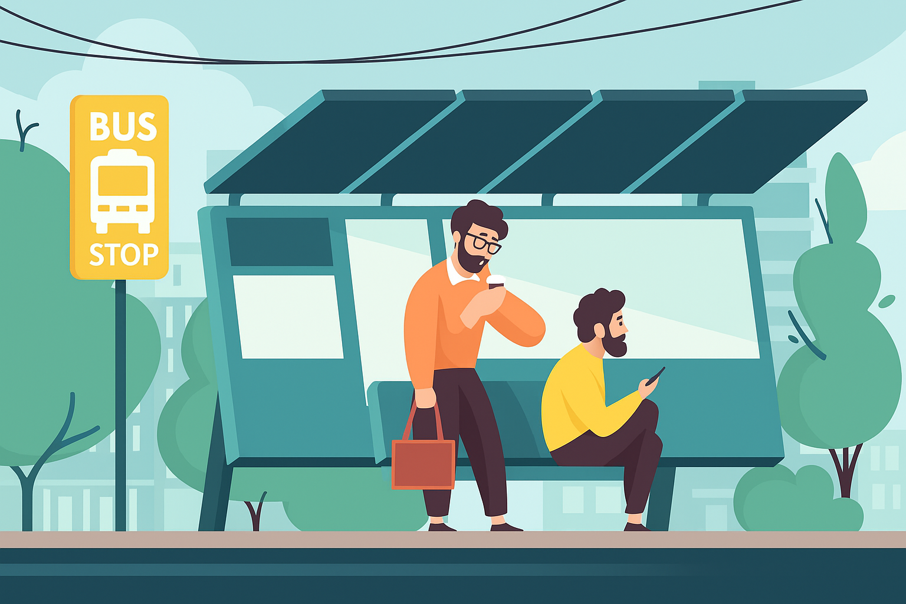

TrackMyBus - Live Bus Tracking
Say Goodbye to Long Waits
Track Your Bus in Real-Time!

Bus 1 - Tilagor
Track
Bus 2 - Naiyorpool
Track
Bus 3 - Amberkhana
Track
Bus 4 - Bondor Bazar
Track
Bus 5 - Madina Market
Track